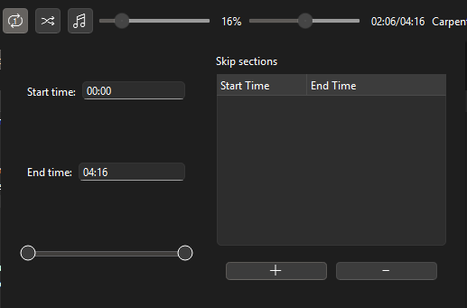

Проигрывание
Эта секция покрывает детали насчёт реализации проигрывания.
Повторение
Нажав кнопку повторения, вы можете переключить режим повторения, что повлияет на проигрывание.
Есть три стандартных режима:
- Без повторения - после окончания текущего плейлиста, следующий плейлист начинает проигрываться.
- Повторение плейлиста - после окончания текущего плейлиста, он начинается заново.
- Повторение трека - после окончания текущего трека, он начинается заново.
Повторение трека
Когда включён режим повторения трека, вы можете открыть меню повторения трека.

Это меню позволяет вам выбрать определённый отрезок для проигрывания, или добавить секции для пропуска. Если в какой-то песне есть скучный сегмент c 1:09 до 1:31, просто добавьте секцию для пропуска, покрывающую это время. Вы не услышите этот сегмент!
Перемешивание
Нажав кнопку перемешивания, вы можете включить перемешивание, которое будет проигрывать случайный трек из плейлиста после конца текущего.
Поддерживаемые форматы
Поддерживаемые форматы аудиообразцов - pcm_s16le, pcm_s24le, pcm_s32le и pcm_f32le. Мы не поддерживаем форматы u8, s64 и f64 поскольку они не распостранены в использовании и по сути устарели, то же самое можно сказать про форматы Big Endian.
Проигрывание до 8 каналов и неограниченной частоты дискретизации стабильно поддерживается. Больше 8 каналов не поддерживается, но это и не поддерживается большинством кодеков - самый распространённый MP3 не поддерживает больше двух каналов. Это может быть изменено в версии 1.0.
Поддерживаемые зашифрованные форматы это Vorbis, Opus, FLAC, MP3, AAC, ALAC, AC3, EAC3.
Контейнеры для Vorbis/Opus и AAC/ALAC/AC3 также поддерживаются, и включают OGG, OGA, OGV, OGX, MOV, M4A, MP4, MKV, MKA.
OGM не поддерживается, так как это не официальный стандарт от Xiph.org. Проигрывание этого формата может не работать.
Проигрывание высоко оптимизировано, и, не хочу хвастатся, но оно может быть даже самым быстрым среди всех остальных плееров. Определённо можно сказать, что оно не медленнее.
Буферизация
Во-первых, в стандартных билдах программы проигрывание создаёт 8 буферов перед началом потока. Если в определённый момент произойдёт блокировка ввода/вывода, этот запас буферов необходим, чтобы у вывода было достаточно данных перед тем как по-настоящему прервать вывод аудио.
Это также означает, что у эквализации аудио будет небольшая задержка, если она переключена во время активного вывода звука.
Парсинг зашифрованных форматов
Для получения метаданных файлов и дешифровки форматов, мы используем FFmpeg. Он высоко оптимизирован и быстр, используя под капотом большое количество ассемблера, написанного вручную, и использует известные библиотеки на нижнем уровне.
Парсинг сырых форматов
Единственный поддерживаемый сырой формат - WAV, и парсинг этого формата довольно эффективен: это лишь один системный вызов для чтения следующего куска байтов из файла.